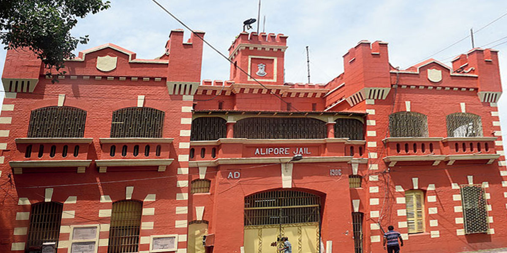

Alipore Central Jail traces its origins to the early twentieth century, when the colonial administration constructed the facility in 1906 in the Alipore area of south Kolkata, then the judicial and administrative heart of British Bengal, adjoining the Alipore Sessions Court. Unlike monuments founded around myth or legend, its identity was shaped entirely by function: it was built as a high-security prison to house convicts and, increasingly, political detainees as unrest against colonial rule intensified in Bengal following the 1905 partition of the province. The jail's proximity to the courts made it the natural site for detaining and interrogating those charged under sedition and conspiracy laws, setting the stage for its later historical prominence.
The jail's core significance lies in its role as one of colonial India's most important sites of political incarceration, standing alongside institutions such as the Cellular Jail in the Andamans in the collective memory of the freedom movement, though unlike the latter it primarily held under-trial and convicted prisoners connected to Bengal's revolutionary societies rather than long-term transportees. It gained national attention through the Alipore Bomb Case of 1908, arising from a failed attempt on the life of a British magistrate, in which Aurobindo Ghosh was held for nearly a year as an under-trial before being acquitted on 6 May 1909 by Judge Beachcroft for lack of credible evidence. The case was described at the time as the first state trial of its magnitude in India, drawing wide public and press attention to the revolutionary movement centred in Bengal.
Spread over roughly 15 acres, the jail complex included multiple wards, solitary cells, an execution yard, a central watch tower, a jail hospital, and a printing press building, reflecting the scale of a facility built to process large numbers of ordinary and political prisoners together. Several members of Bengal's revolutionary underground, including associates of the Jugantar and Anushilan Samiti groups implicated alongside Aurobindo Ghosh in the 1908 case, were held in its cells during the investigation and trial, and later prisoners connected to the independence movement, including figures associated with Chittaranjan Das's legal and political circle, passed through the institution in subsequent decades. Its colonial-era masonry wards and barred enclosures were built to the standard institutional prison design of the period, with minimal ventilation and small individual cells intended for isolation of political detainees from the general prison population.
A particularly grim chapter unfolded within the jail premises in 1908 and 1909, when Satyendranath Bose and Kanailal Dutt, two young revolutionaries linked to the Alipore case, shot dead a fellow prisoner turned approver, Naren Gossain, inside the jail hospital, an act that led to their own trial and execution and became one of the most widely remembered episodes of defiance associated with the institution. Subhas Chandra Bose was also among the later political figures connected with the jail during the freedom struggle, reinforcing its standing as a site where successive generations of Bengal's nationalist leadership had direct personal experience of colonial incarceration. These episodes cemented the jail's identity not merely as a holding facility but as a contested space where the colonial state and the revolutionary movement confronted one another directly.
The jail continued to function as an active correctional facility, latterly known as Alipore Central Correctional Home, until it was formally decommissioned in February 2019, after which the West Bengal government, through the Housing Infrastructure Development Corporation, redeveloped the heritage portions of the complex into the Alipore Museum, inaugurated by Chief Minister Mamata Banerjee on 21 September 2022. The museum retains original structures such as the prison wards, execution area, watch tower and the former jail press and hospital buildings, now repurposed as exhibition spaces, alongside an INA-themed cafe and a public park within the same precinct, and the state has further proposed housing a museum on the Partition of India within part of the same correctional home complex. Today the site functions as a heritage and educational destination managed by the state government, drawing visitors to view the cells and courtyards once occupied by the men whose trials and confinement there shaped Bengal's revolutionary history.
| Date of Introduction | October 11, 2023 |
|---|---|
| Address | Senior Postmaster, |
| Kolkata GPO, | |
| Kolkata (dt.), West Bengal - 700001. |